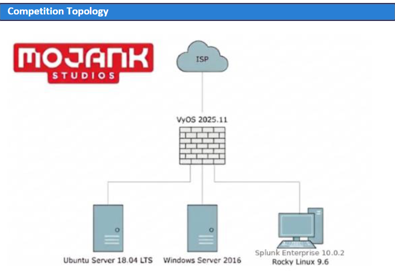

Find your public IPs
Uses the documented formula: third octet = 200 + team number. Leave blank when not in use.
Enter your assigned number to calculate the public IPs below.
Network diagram

Network ranges
| Network element | Address | Purpose |
|---|---|---|
| Internet gateway/shared DNS | 192.168.192.1 |
Shared upstream gateway and DNS. |
| Shared network | 192.168.192.0/18 |
Competition-wide upstream range. |
| VyOS WAN |
192.168.200+x.2
|
Team public/WAN-side router address. |
| Team WAN subnet | 192.168.200+x.0/24 |
Public-side team range. |
| VyOS LAN | 172.16.1.1 |
Team internal gateway. |
| Team LAN | 172.16.1.0/24 |
Internal team network. |
The firewall uses 1:1 NAT, so each box has a private and a public address. Scoring checks use the public addresses.
Host and IP map
| Host | Private IP (team LAN) | Public IP (reaches this host) | Operating system / role |
|---|---|---|---|
bedrock |
172.16.1.1 |
192.168.200+x.2
|
VyOS 2025.11 router/firewall |
iron |
172.16.1.10 |
192.168.200+x.10
|
Ubuntu Server 18.04 LTS |
lapis |
172.16.1.11 |
192.168.200+x.11
|
Windows Server 2016; AD/DNS functions may be present |
redstone |
172.16.1.12 |
192.168.200+x.12
|
Rocky Linux 9.6; Splunk Enterprise 10.0.2 |
Logical relationships
Internet / shared network
Upstream connectivity, shared DNS, and the public side of the team’s VyOS router.
bedrock
Routes and filters traffic between the WAN range and the internal
172.16.1.0/24 network. 1:1 NAT exposes the boxes
publicly.
iron, lapis, redstone
Internal systems that host scored services and are reachable through their mapped public addresses.
Splunk visibility
Ubuntu and Windows forward logs to the team’s Splunk Enterprise indexer and to an additional Black Team-controlled indexer. The latter must remain enabled.
Service map
| Service | Likely dependency or concern | Validation focus |
|---|---|---|
| HTTP/HTTPS | Web server, content, and possible application/database dependencies. | Request expected page through the public address. |
| SSH | Host access and account authentication. | Connect using a valid scoring account. |
| FTP | Service configuration and account authentication. | Connect and test the expected behavior. |
| AD/DNS | Directory services and name resolution. | Test DNS and directory authentication. |
| POP3 | Mail service and account authentication. | Verify the expected port and login behavior. |